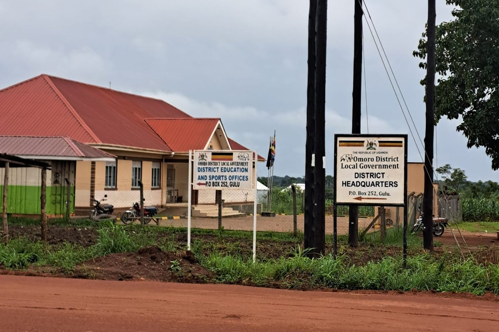
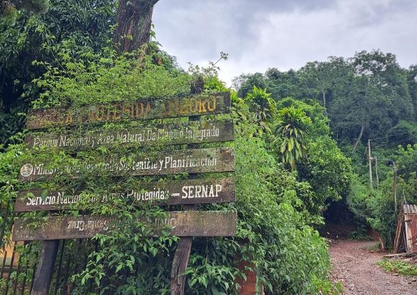

My research lies at the intersection of development economics and political economy, with a focus on governance. I study how the organization of the state affects public service delivery, political accountability, and environmental outcomes. I currently work on Uganda and Bolivia, using administrative and satellite data combined with quasi-experimental designs.
Before starting my PhD, I worked as a Pre-doctoral Fellow with CGIAR/SPIA at PSE. I previously held research assistant positions at the Inter-American Development Bank and the Institute of Socio-Economic Research at the Bolivian Catholic University. I hold an MSc in Economics from the University of Warwick, where I studied as a Chevening Scholar, and a bachelor's degree from the Bolivian Catholic University.
Research interests: Development Economics, Political Economy, Environmental Economics.
Job Market Paper
Bringing Services Closer to People? Distance to Administrators and Public Service Delivery in Uganda
Looking to improve public service delivery, many developing countries have increased the number of subnational administrative units over the past three decades. A key dimension of this strategy is spatial: smaller administrative units reduce the physical distance between households and local administrators. Leveraging an episode of district proliferation in Uganda, this paper studies whether geographical proximity to local government administrative centers affects the provision of public goods and services. To establish causality, I exploit a policy implementation rule that introduced exogenous variation in households’ proximity to new district headquarters. The main findings show that households living closer to new administrative centers have significantly better access to electricity, roads, health facilities, and water sources. These improvements are accompanied by a shift from contentious to participatory engagement with the state and lower direct experiences of corruption. Despite these gains, proximity does not translate into higher trust in government or increased democratic perceptions. These findings suggest that in hybrid regimes, bringing the state closer to citizens can improve services, engagement with the government, and accountability while leaving the underlying political relationship between citizens and the state unchanged, a pattern that holds even in politically aligned districts where engagement is stronger.

Omoro District headquarters, Uganda, 2024.
Presented at: PacDev 2026 (UC Davis), STEG Annual Conference and Theme Workshops 2026, Vancouver School of Economics Development and Political Economy seminar, European Doctoral Programme Jamboree 2024 (UPF), 12th Warwick PhD Economics Conference, 2nd Essex PhD Economics Conference, AFEDEV International Conference on Development Economics 2023, 14th Bolivian Conference on Development Economics, PSE Development and Political Economy seminar.
Research
Work in Progress
Bottom-up Conservation: Sub-national Protected Areas and Local Governance in Bolivia
Protected areas are central to global conservation policy, yet evidence on decentralized forest conservation remains limited. This paper studies Municipal Protected Areas in Bolivia, where municipalities can designate protected areas but the central government retains authority over rural land titling. Combining annual land cover data, parcel-level titling records, and judicial rulings, we examine whether local protection holds when the level of government that declares it does not control property rights over the same land. Using staggered difference-in-differences methods, we find that municipal protected areas modestly improve forest outcomes, reducing deforestation and the conversion of forest to pasture. In protected areas without indigenous territories, however, national titling increases after designation and shifts toward commercial and medium-sized properties, whose titling is followed by higher deforestation. This response is absent where protection overlaps indigenous territories.

Protected area sign, Bolivia, 2025.
Presented at: 6th AFEDEV International Conference on Development Economics, 3rd AFÉPOP Annual Conference, 20th Biennial Conference of the International Association for the Study of the Commons, 14th Bolivian Conference on Development Economics 2024, Forest and People Conference 2024, PSE GPET seminar.
Democratization of Justice and Checks and Balances in Bolivia
Skills for the Current Generation of Actors in Agricultural Food Systems
While property rights interventions have been a dominant way to redistribute costs and benefits from forests and address conservation challenges especially in working forests, the evidence of their effectiveness to date remains sparse. In this paper, we address this gap by providing rigorous evidence of the impacts of two such interventions: the establishment of commercial logging rights and voluntary market-based certification, specifically certification by the Forest Stewardship Council (FSC). Applying rigorous difference-in-difference methods for staggered treatment designs, we use data from 15 tropical countries, where we conducted synchronized research (meta-keta) aligned with each country’s specific theory of change. We show that the establishment of logging rights does not exacerbate forest loss. We find limited evidence of FSC’s impacts on stalling forest loss. However, we note the significant heterogeneity by colonial past and economic development stage. Further, we demonstrate the importance of controlling for country specific covariates based on each country’s theory of change. Our work has important implications for the design and implementation of global conservation and development interventions.
An Unlikely Shield: Informal Settlements and Political Violence in Peru
Expectations about future labour market opportunities are essential for education and labour market decisions. This paper uses data from a survey of youths in seven Latin American and Caribbean countries to explore the role of expected returns to education on schooling decisions. We find substantial variation in subjective expectations partly explained by youths’ socioeconomic characteristics. Also, we find that enrolment in tertiary education is positively related to perceived education returns. Furthermore, the association of expectations with schooling choices differs across individuals in relevant domains, including gender, skills, and socioeconomic background. Our results suggest that public policies might impact choices and reduce socioeconomic gaps in schooling by providing information on education returns.
This review identifies key data gaps and methodological challenges in collecting data on livestock in the context of household and agricultural surveys, with emphasis on livestock enumeration, product quantification and valuation, and labor. Drawing on consultations with international experts and stakeholders, as well as a review of nine prominent survey instruments, including those from the 50x2030 Initiative, the Living Standards Measurement Study–Integrated Surveys on Agriculture (LSMS-ISA), and the Agricultural Integrated Survey (AGRIS), the review highlights critical gaps in measuring live weight, milk production, by-products, and gender-disaggregated labor in addition to revealing limited or inconsistent coverage in critical areas such as herd dynamics, livestock systems, feed, and animal health. The review also indicates emerging methodologies, including digital apps, AI-powered computer vision, mechanized tools, and remote sensing, and discusses their feasibility for integration in large-scale household and agricultural survey operations. The objective of the review is to inform future methodological research efforts aimed at validating scalable and cost-effective innovations for improved livestock data collected through national agricultural surveys, such as those supported by the 50x2030 Initiative.
International plant breeding efforts aim to help address global challenges such as food insecurity, climate change and micronutrient deficiencies, but how much do we know about where new varieties are being used at scale in farmers’ fields? We use farmer-reported survey data and DNA fingerprinting data from samples of plant tissue that were collected from the same farmers’ fields, from 16 empirical studies across nine crops and ten countries to test commonly used methods used to generate adoption estimates. Taking the DNA fingerprinting results as the benchmark, we show that farmers both misclassify (improved vs local varieties) and misidentify (by name) their varieties at substantial rates. These measurement errors are non-classical and thus cloud understanding of the true nature of adoption.
Econometrics 2: Treatment Effect Models — Teaching Assistant, M1 Public Policy and Development (PPD), 2023–24 and 2024–25. PPD Teaching Prize for Best Teaching Assistant, 2023–24. Topics: potential outcomes, RCTs, IV, RDD, DiD, matching; applications in R.
Universidad Católica Boliviana
Macroeconomics II (Econ 223) — Lecturer, 2020. Topics: consumption and investment, open economy, money and inflation, Phillips curve, debt sustainability, growth.
General Economics (Econ 101) — Lecturer, 2017–2018. Topics: supply and demand, consumer and producer theory, national accounts, growth.
Econometrics I & II — Teaching Assistant, 2014–2015. Topics: linear regression and inference; time series.
Macroeconomics I — Teaching Assistant, 2013–2014. Topics: national accounts, IS–LM, growth models.
General Economics — Teaching Assistant, 2012. Topics: principles of micro and macroeconomics.
Short courses
Multidimensional Poverty — Universidad Católica Boliviana, 2017.
Introduction to Stata Programming — Universidad Mayor de San Andrés, 2016.
Household Surveys and Applications in Stata — Universidad Católica Boliviana, 2016.